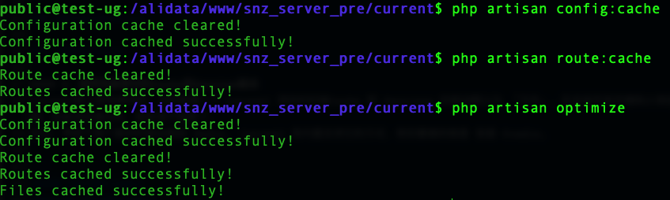

很多人都说用 Laravel 做开发很好但是性能太差，事实上 Laravel 并不慢，只不过还是我们没有用好它罢了。
首先想到的导致 PHP 项目慢的一个首要原因就是 IO 问题， 因为php是解释型语言，所以每次请求都要读取源代码并进行语法解析，解决这个问题要从两方面下手：
1、将解析过的文件的结果都缓存起来，下次直接读取，这方面目前已经有了非常成熟的方案，比如 Xcache, Opcache 等，选择官方的 Opcache就好， 你会发现只要开了 Opcache 并且配置得当， 程序性能马上提升 10 倍是不成问题的
2、减少文件不必要的文件引入，现在大家都用 composer 组织项目，往往会引入很多不必要的类库，导致项目变的臃肿。
基本上解决了 IO 问题， PHP 项目性能就会有极大的提升， 因为大多数 PHP 项目都不是计算密集型项目，CPU并不会成为它的性能瓶颈。
性能提高十倍
没感觉出效果
事实上这条对所有使用 composer 项目都适用，就是执行 composer dump-autoload -o, 它的主要作用是将通过 PSR0/PSR4 加载的文件转化为 classmap 方式的加载，从而减少少IO次数
性能翻倍
Laravel 提供了两个预缓存命令：
php artisan config:cache
php artisan route:cache
# 或直接
php artisan optimize # 相当于执行上面两个命令执行这两个命令可以将配置以及路由的解析结果缓存起来
直观查看执行上面命令的区别：

打开.env文件，关闭debug设置
APP_ENV=production
APP_DEBUG=falseLaravel默认是有缓存的，当你新建一个 Laravel 项目的时候Cache 和 Sessions 的驱动默认为 「文件」。在本地开发环境和小项目中它没啥问题，但是项目增长时，就显得不够用了。
所以，考虑下换个更好的驱动例如 Redis。 Laravel 有内置支持它的方式，而你要做的就是 安装 Predis。
CACHE_DRIVER=redis
SESSION_DRIVER=redis不要使用 predis，phpredis 性能更好
注意使用 phpredis 要安装 php 的 redis 扩展， predis 不需要
参考 使用 Octane 扩展加速您的 Laravel 项目
有些时候，Laravel 比预期慢，这时你可以考虑异步执行任务。
最常见的情况就是发送短信、邮件等；
对于某些高频的、即时性要求不高的接口，如系统计相关，可以在nginx层进行拦截，纪录日志；用脚本实时的监听日志插入队列，通过队列去进行相关统计。
如用 filebeat 实时监听nginx日志，插入redis队列，再用php脚本去处理队列。
这样可以防止接口访问到php层，而nginx层的性能是远远高于php的
请求接口缓存，mysql中查询到的数据放入redis,下次直接从redis中取数据，提高性能。
注意考虑缓存策略
表设计、索引等
肯定会有很多前端的资源，比如 CSS 文件和 JS 脚本。
你可以通过多种方式来减少发送给用户的数据量：
压缩静态资源;
捆绑静态资源（将多个 CSS 文件或者 JS 脚本合并为一个，以减少请求次数）;
开启 gzip 压缩;
开启http 304 缓存
开启 http Cache-Control: max-age={seconds)
然而，如果你遇到大量的流量，我建议你可以将你的静态资源托管到专用的 CDN 服务器上，比如七牛等
[1] 使用 Octane 扩展加速您的 Laravel 项目: //wangmaolin.net/article/7ndvd92eo2.html